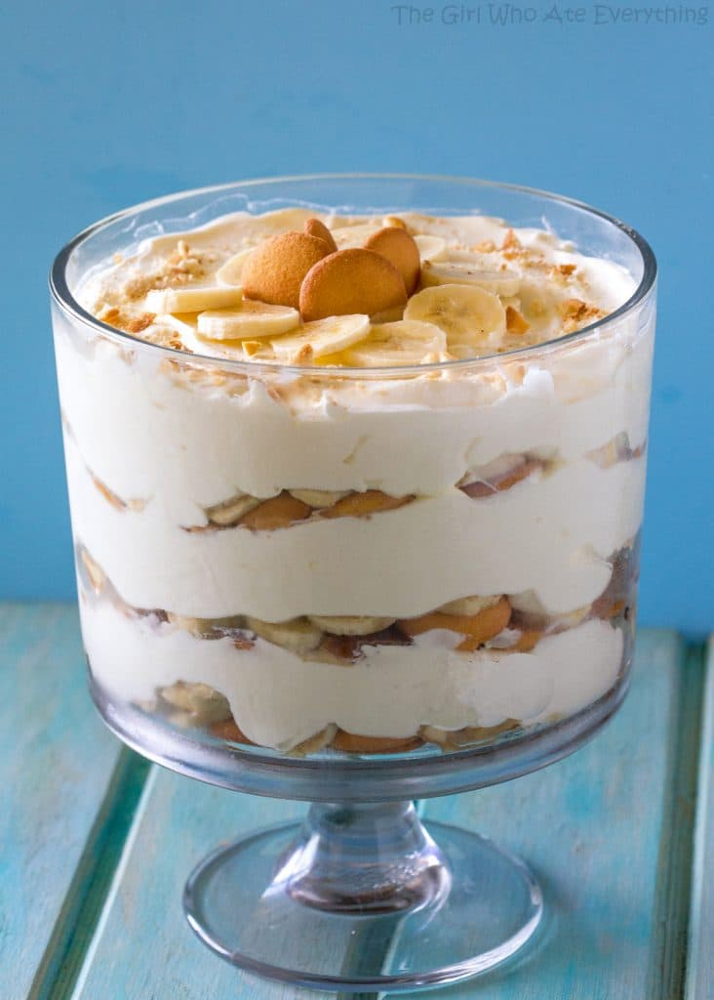

Banana Pudding

Description
This dessert is a hit at potlucks
Ingredients
- 1 (14oz) can sweetened condensed milk
- 1 1/2 cups ice cold water
- 1 (3.4 oz) box instant vanilla pudding mix
- 3 cups heavy cream
- 4 cups sliced barely ripe bananas
- 1 (12oz.) box Nilla wafers
Steps
- In a large bowl, beat together the sweetened condensed milk and water until well combined - about 1 minute. Add the pudding mix and beat well - about 2 minutes. Cover and refrigerate for 3-4 hours or overnight. It is very important to allow the proper amount of time for the pudding mixture to set. It will be watery if you don't let it set up long enough.
- In a large bowl, whip the heavy cream until stiff peaks form. Gently fold the whipped cream into the pudding mixture until no streaks of pudding remain.
- Dessert can either be made in individual portions or in a large glass bowl with 4-5 quart capacity (a 9x13 baking dish also works).
- To assemble dessert, arrange 1/3 of the Nilla wafers covering the bottom, overlapping if necessary. Next, layer 1/3 of the bananas, and 1/3 of the pudding mixture. Repeat twice more, garnishing with additional wafers or wafer crumbs on the top layer. Cover tightly and allow to chill in the fridge for at least 4 hours - or up to 8 hours, no longer (because bananas will start to brown - see Notes for tips on preventing browning).
Home